<div class="footer-container">
  <!-- Icono de veneno -->
  <div *ngIf="selectedCounter === 'life'" class="icon-container" (click)="selectCounter('poison')">
    
  </div>

  <!-- Icono de comandante -->
  <div *ngIf="selectedCounter === 'life'" class="icon-container" (click)="selectCounter('edh')">
    
  </div>


  <!-- Icono de volver -->
  <div *ngIf="selectedCounter !== 'life'" class="icon-container" (click)="selectCounter('life')">
    <ion-icon name="return-up-back"></ion-icon>
  </div>
</div>
